Import.io is another popular web scraping tool. The current version is entirely web based, but they have released desktop applications in the past. Here are all the similarities and differences that you need to know between the current web based import.io and the latest version of the visual web scraping tool ParseHub. This comparison should be helpful if you are deciding which web scraping tool to pick. If you are currently an import.io user and want to know what your web scraping alternatives are – find out if you will benefit from switching to ParseHub below.
Cost
This is probably the first comparison between import.io and ParseHub that you want to see: which web scraping software gives you the best bang for your buck? The answer is not quite clear cut, as ParseHub's plans and import.io's plans have different limitations.
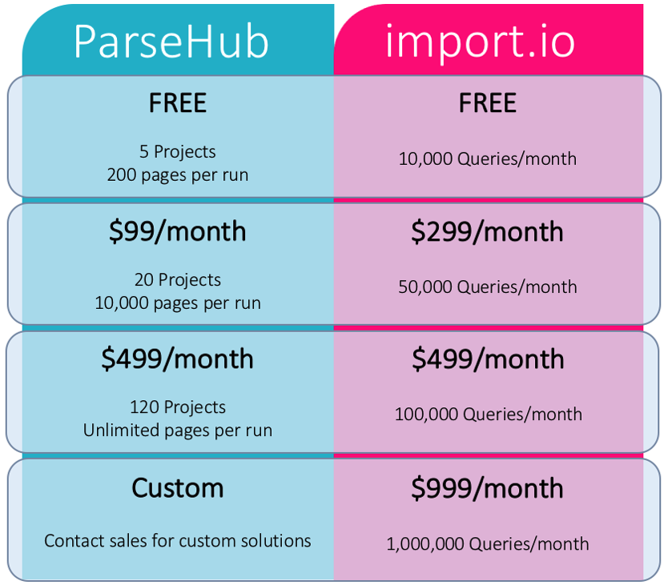
ParseHub's plans are limited by:
- the number of projects that can be saved
- the number of web pages you can scrape data from per run
- the speed at which you can collect data
Imoprt.io limits the number of:
- queries per month
- the number of runs that you can store results for
Most people build one ParseHub project per website, spanning over many separate web pages. Projects are not limited by the number of times they can be run.
On the other hand, each page extracted by import.io counts as one query, so the total number of queries you get in a month is the number of pages that can be extracted.
For both Import.io and ParseHub you have to pay and subscribe to a plan to get the scheduling feature – the ability to collect data from a website continuously on a schedule (daily, weekly, monthly).
If you don't want to learn how to use a tool and just want your data on demand, both ParseHub and Import.io offer a service that extracts data for you. Just contact sales of both companies and someone will scrape data from the website you want – delivering them in CSV/Excel or API format.
What can you do with ParseHub?

The biggest difference between ParseHub and its web scraping alternatives is that ParseHub can get data from interactive websites.
You can instruct ParseHub to scrape data from very complex and dynamic sites, because it can:
- sign in to accounts
- select choices from dropdown menus, radio buttons and tabs
- search with a search bar
- travel to a new page simply by clicking on a "next" button.
- get data from infinitely scrolling pages
And more! These are all things that import.io cannot handle.
Here is a full list of ParseHub's scraping features:
| Automatic IP Rotation | Get data from tables and maps | Conditionals and expressions |
| Content that loads with AJAX and JavaScript | Search through forms and inputs | XPATH, Regular Expressions and CSS Selectors |
| Extract text, HTML and attributes | Get data from drop-downs, tabs and pop-ups | REST API with web hooks |
| Download files and images | Pagination and navigation | Dropbox and Google Sheets integration |
| Scrape content from infinitely scrolling pages | Scheduled Runs | Regular expression selection |
The only downside of using ParseHub to scrape data as an alternative to import.io is that you will have to learn how to use ParseHub's commands before doing any kind of data extraction. ParseHub's versatility is only possible because of its wide variety of commands, and that means it takes longer to learn than imoprt.io. Luckily, the application is intuitive and there are plenty of tutorials to help you in the help center if you get stuck!
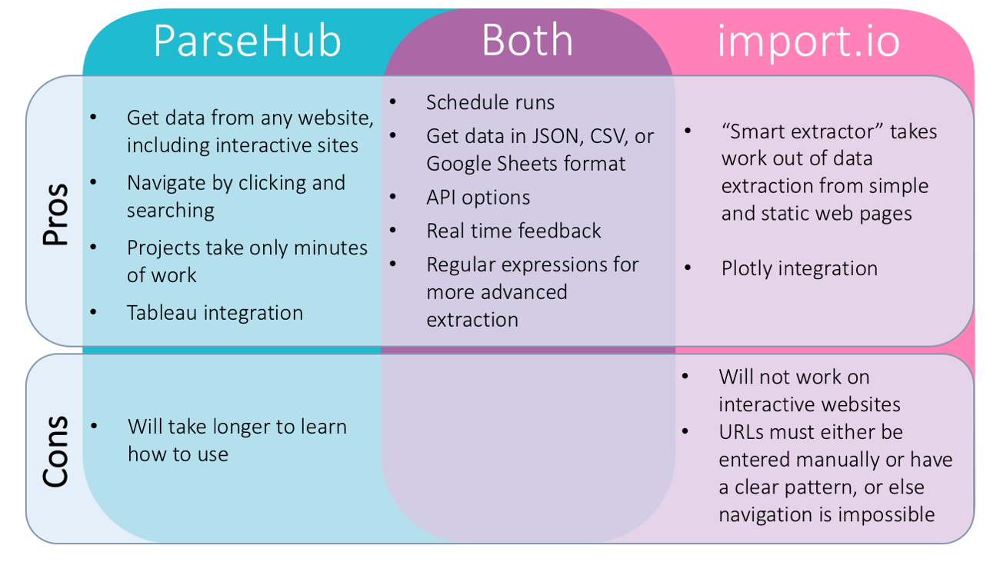
What can you do with import.io?
Import.io will let you extract data by learning a minimal number of commands. It can only be used on simple, or static, web pages, but some projects may take just seconds of work to build in import.io, whereas it may take you more time to build content with ParseHub.
Not only do the web pages need to be simple, but the website URLs need to be as well. See import.io pagination for more information on this.
When a new project is started, import.io tries to guess what you want from the page. They used to call this feature Magic extraction. For very simple websites, this usually provides a good starting place for the project and could cut down the time to build an extractor down to just a few seconds.
What can you do with both?
Both web scraping tools will let you download extracted data as CSV's and as JSON. Both will let you import data directly into a Google Sheet and can be controlled as an API. You can schedule runs with import.io and with ParseHub, too, depending on your payment plan.
When building your project, you can get real time feedback from ParseHub's sample and test runs, or from import.io's data view. Both web scrapers allow you to use regular expressions to scrape only the text that you want.
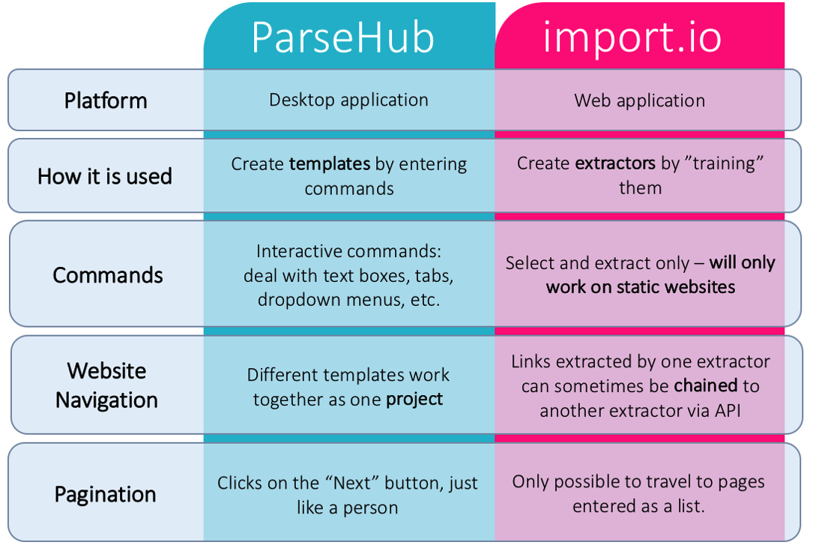
You create extractors to extract data with import.io, and templates to extract data with ParseHub. These are very similar: they are both sets of instructions that the software uses to select and extract items from a webpage.
However, an import.io user doesn't enter the commands directly. Instead, they train the extractor to select and extract what they want from a page. On the other hand, a ParseHub user enters commands directly into the template. When ParseHub executes the template, it follows the instructions exactly as entered. When import.io executes a template, it remembers what the user trained it to do, and executes the same way.
This is an example ParseHub project. You can see all of the different commands that the user entered, like Select, Hover, and Extract, in the left side bar.
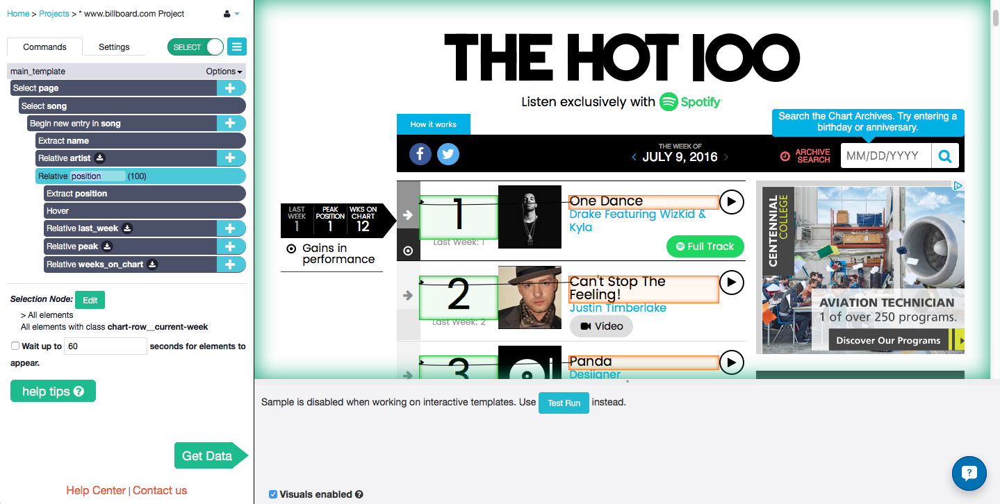
Training the import.io extractor takes place in their "website view", as seen above.
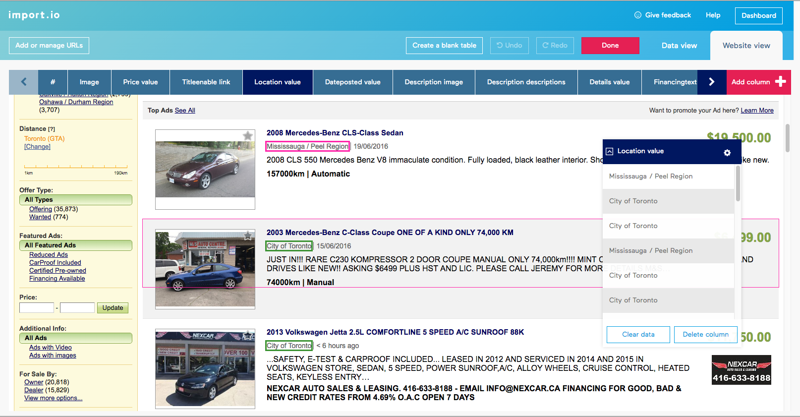
Scraping Commands
You can only train import.io to select and extract items on a web page. Meanwhile, ParseHub has a wider variety of commands that allow a user to navigate through web pages and deal with interactive elements.
List of ParseHub commands that can be combined to perform advanced scraping functions:
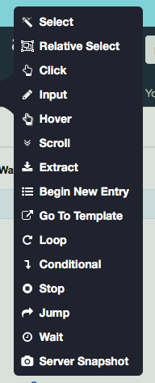
ParseHub pagination
Because of the variety of commands available, ParseHub can navigate to different pages a variety of ways, including clicking on links and by entering text into search boxes. Remember that one ParseHub project may have several very different templates all working together, with the end goal of getting you a complete set of data.
Import.io pagination
Since you can't command an import.io extractor to navigate to different pages through clicking or searching, this means that page navigation is only possible by entering a list of pages. When you run an import.io extractor, it will run on all of the URLs that you enter in this list. Each URL scraped counts as one query. Pages with different structures require building different extractors.
If you are able to identify a pattern in the URLs of the pages you want to run an extractor on, like "/page=1", "/page=2", etc., then import.io has a tool that will help so you don't have to manually copy and paste each one. The URL generator will give you a list of URLs to run your extractor on.
Web Scraping Example
I tested out both import.io and ParseHub on a popular website – Amazon to see how they compare. First let's have a look at import.io and then go to ParseHub.
Problem: get pricing details for every single watch sold by one of Amazon's "Top Brands".
import.io project
First extractor
The list of watch brands in amazon.ca's Top Brands was found at this url. I want to scrape information from each one of the watch brands listed here. import.io will be able to do this if I have a list of each one the URLs. I will create an extractor to scrape this page and get this list.
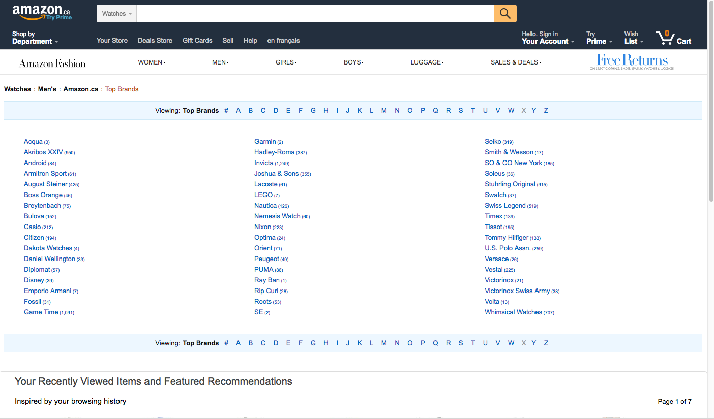
When you start a new extractor in import.io, it first tries to guess what you are trying to extract on the page. For this particular web page, it took about 10 seconds to load a table with the data it thought I wanted.
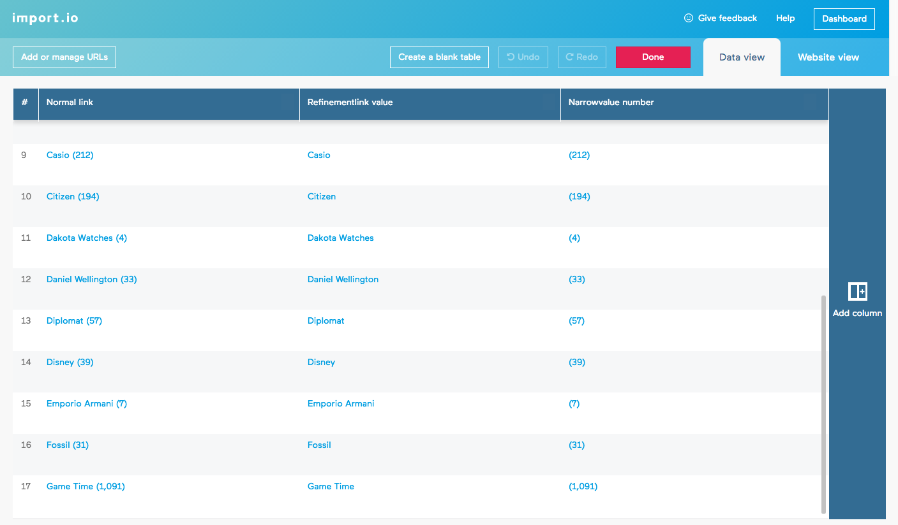
After looking over the software's first guess, you then turn to the website view tab to refine your training. In this case, import.io only selected the first column of brands, and I wanted all three columns, so I had to train the extractor to do that.
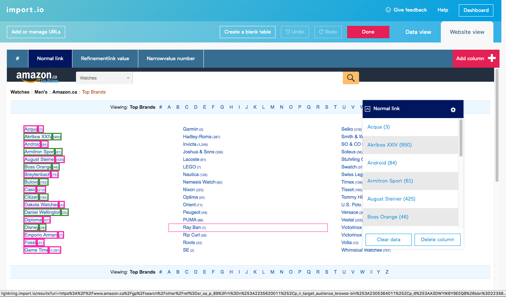
Unfortunately, when I clicked on the other brand names, the software didn't recognize that I wanted to select them all and so only selected one at a time. Instead of clicking on 34 more brands, I decided to delete the already extracted columns and start from scratch.
I clicked on three brands, the first, middle and last, and then import.io automatically selected all of the others.
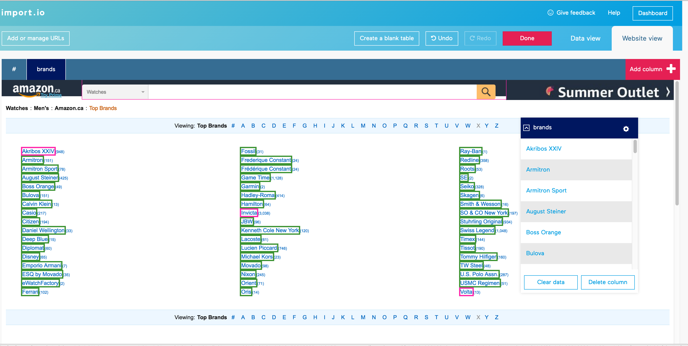
I was happy with the data view so I ran the extractor and downloaded the CSV file of the links. It didn't look exactly like the data I saw on the website: there are three columns instead of just one with the URLs, like I wanted.
In old versions of import.io it was possible to "chain" extractors together so that the links extracted by one would automatically be sent to the other. However, it does not seem like it is possible to do this with the current version without any manual entering or without creating a script using the import.io API.
Second extractor
I trained the next extractor on one of the links I got from the CSV given to me from the first extractor. I chose a brand that had lots of different watches so that there was more than one page of results. This time, import.io's initial guess did select all the watches on the page and required less additional training than the first one.
Back in website view, I trained the extractor to select and extract exactly what I wanted. Lastly, I used the regular expressions option to remove the unwanted "CDN$" prefix that was in front of all the prices.
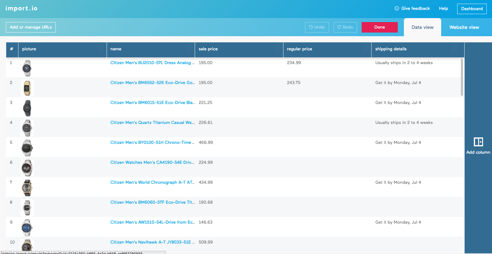
In total, I was able to complete the training for this extractor fairly quickly, in 4 or 5 minutes. I now had to input links to all of the different pages that I wanted to be included in my query. This was a problem that I didn't know how to resolve.
import.io's URL generator only helps generate URLs if the pages follow an obvious pattern. On amazon.ca, they do not. The page URLs are all very long, and there seems to be very little correlation between the URL of page 1 and page 2 of the same brand. Additionally, I had to copy and paste the links column from the CSV into a word document and add a line break at the end of each URL manually in order to put the list into the second extractor - I wasn't able to find an easier way to do this.
Pros:
- Training both templates took a very short amount of time - most columns of data required 2 or 3 clicks so it took only minutes to select everything that was needed.
- Regular expressions were able to remove the unwanted prefixes before exporting the data
Cons:
- import.io failed to travel to every page because there was no pattern to amazon.ca's URLs. Instead of every single watch, like I had wanted, I was only able to scrape the first page of each brand.
- There was no easy way to "chain" the extractors together, and that meant I had to manually enter line breaks after each URL that was scraped. I would have had to write a script to do this for me if there had been hundreds or thousands of URLs - which isn't practical for someone who is using the tool because they don't know how to code!
- Columns of unwanted and unexpected data were extracted.
ParseHub project
Main template
The ParseHub project started on the same page as the import.io project. It took 2 clicks to select all of the bands on the page, and then ParseHub was told to click on each one of them and go to the next template, called brand.
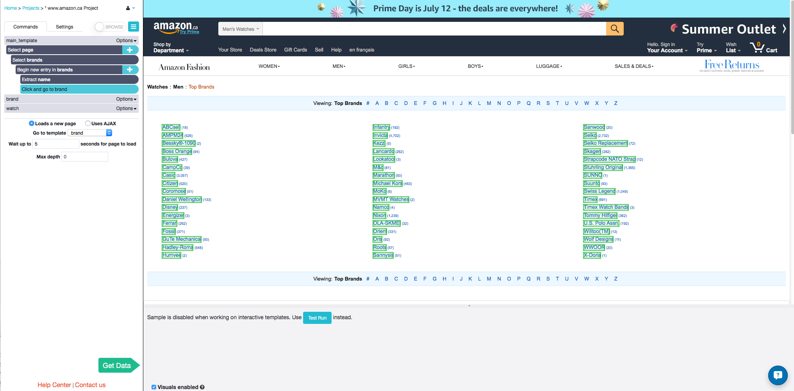
Brand template
To create this template, I travelled to the first page of one of the brands that had lots of watches, so that I could make ParseHub travel to multiple pages of results.
Clicking on the names of two of the watches caused all of them to be selected, and then I used the Relative Select tool to select and extract all of the other information that I wanted. Just like with the import.io project, I was able to use regular expressions to remove the unwanted prefix before the prices.
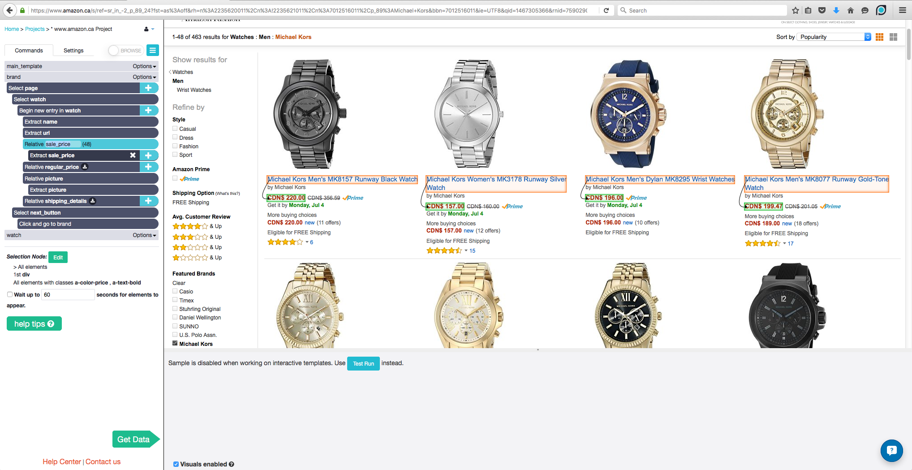
I added one last Select command to travel to the next page of results using the "Next" button. Once ParseHub clicks on it, it will execute the template again and extract all the data that I instructed it to.
The "Next" button on the final page of results does not lead to a new page, so I used XPath selection in order to select the button only when it is linked to a new page. That way, ParseHub will not start this template again after the final page, and will instead go to the next brand in the main_template list.
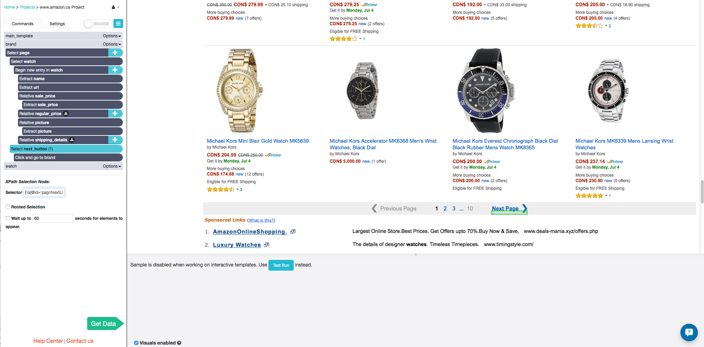
Pros:
- ParseHub handled the amazon.ca pagination very well. It was able to travel to each brand in the list, and also able to travel to every page within a brand.
- Regular expressions removed unwanted prefixes.
- Data columns were exactly what was needed, no more and no less.
- ParseHub's navigation tools make it easy to add to this project and get even more information about the watches: you can click on each watch, or hover over them, to reveal more details.
Cons:
- XPath selection is an advanced technique that would be difficult for a beginner user to use.
Final thoughts
It is very quick and easy to put together an import.io extractor. On many of the websites that I have tested, the "magic extractor"'s initial guess works almost exactly how you want it to, meaning you can start running your extractor just a minute or two after creating it. But it doesn't matter how quickly the web extractor is trained, it is frankly severely limited by the way it navigates through pages. I wasn't able to complete the project I used as an example here because of this limitation, I chose a simple and realistic use case.
I found that the documentation for this version of import.io was also limiting, especially compared to all of the videos and tutorials that I found for the older versions. This could have been the reason that I was unable to find a way to chain the two extractors together: if someone with more experience with import.io can explain, either in a personal email or in the comments below, how to solve the problem I was having with the example project, then I would be happy to edit this comparison. But as of now, it seems impossible with this version of the software.
Completing my ParseHub project took between 10 and 15 minutes in total. It took only a few minutes to train each import.io extractor, but I spent far more than 15 minutes trying to figure out how to get them to travel to every page. For this reason, I spent less time total working with ParseHub than I did with import.io.